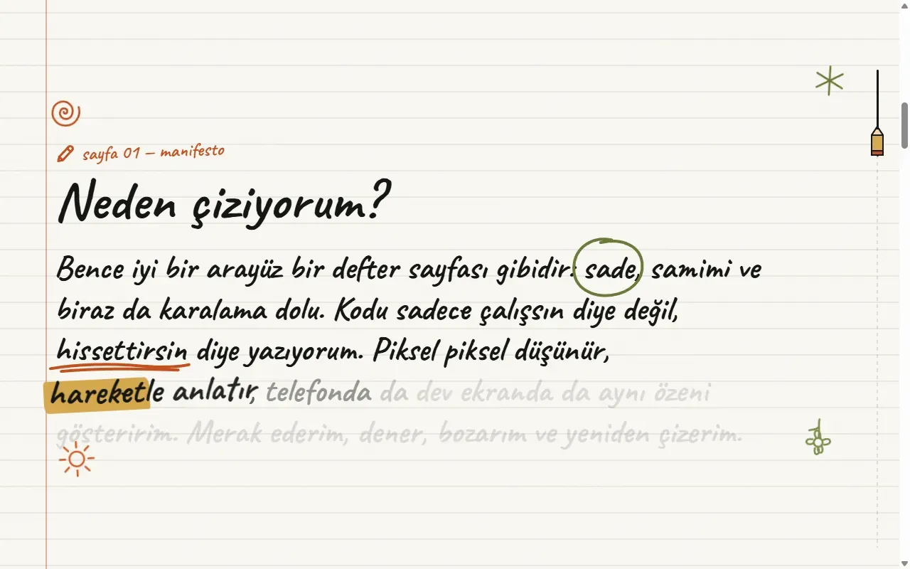
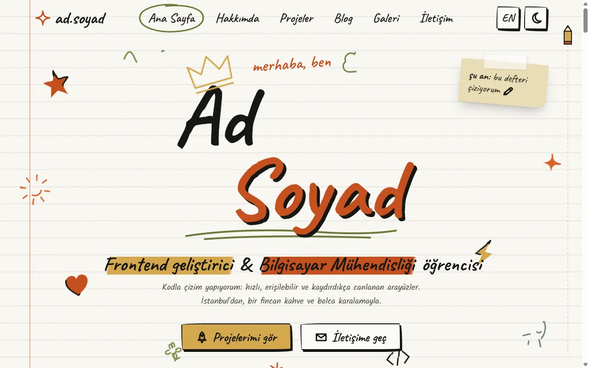

GSAP ScrollTrigger ile kaydırdıkça canlanan sayfalar
Pin, scrub, kendini çizen SVG ve Lenis senkronu: bu sitenin “kaydırdıkça vay be” dedirten dört parçası, gerçek koduyla.
Frontend öğrenirken defterime aldığım notları burada temize çekiyorum. Her yazı bu sitede gerçekten kullandığım bir tekniği anlatıyor; kodu ve ekran görüntüleri sitenin kendisinden.

Pin, scrub, kendini çizen SVG ve Lenis senkronu: bu sitenin “kaydırdıkça vay be” dedirten dört parçası, gerçek koduyla.

Token'lar, [data-theme], localStorage, ilk boyamadaki beyaz flaşı önleyen dört satır ve ay düğmesinden yayılan dairesel geçiş.

Breakpoint'leri cihaza değil içeriğe göre seçmek, clamp() ile büyüyen başlıklar, parmak boyu dokunmatik hedefler ve 375 ile 1280'in yan yana kıyası.
Henüz temize çekilmemiş ama sırada bekleyen konular. Hangisini önce okumak istersin? Bana yaz, sırayı sen belirle.
yakında
Hata mesajı kırmızı yazıdan ibaret değil.
yakında
Performans puanını yükselten küçük alışkanlıklar.
yakında
Çizimleri titreten feTurbulence numarası.